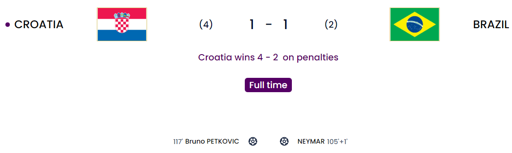
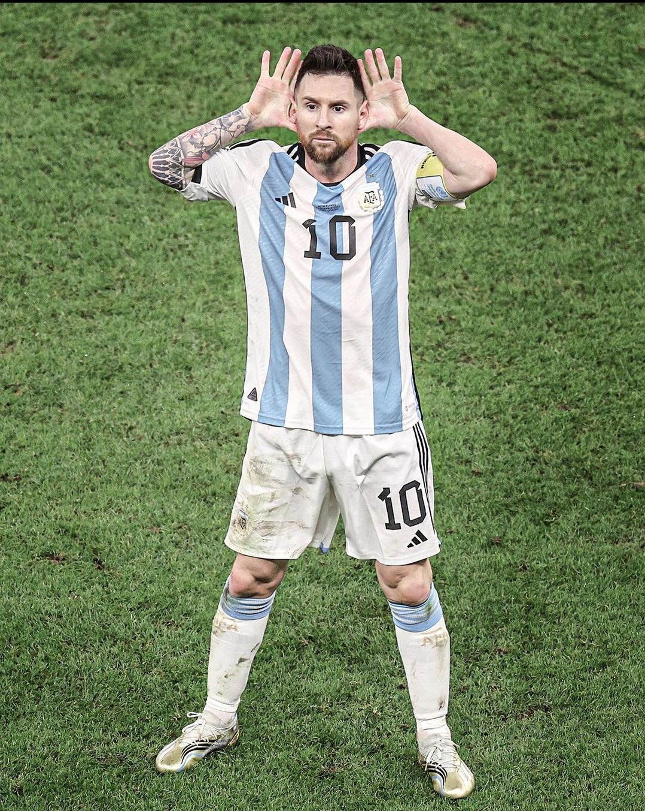

Day 20
2 day break after the Round of 16
Quarter Finals
Croatia v Brazil and Argentina v Netherlands

I am writing this just after the heartbreak. While it is still raw. I am just not interested at all in seeing that sad excuse of a game from Brazil again. Just when I had hoped these guys could go all the way to the final, they had to ruin it. The second was heated, to say the least. We have a Croatia v Argentina showdown. 2 teams who are good at penalty shootouts will face off 😬. Argentina will have to be alert and try to get the game done and dusted and defend like crazy to prevent Croatia from coming back and make sure their lack of attacking threat is neutralized.
Match 1
Croatia hold on again. Build Livakovic a damn statue. Brazil just could not hold onto the ball
Brazil went into the game as favorites as we all know but Croatia played for a penalty shootout from the get-go. Trust me it was such an annoying watch. Chances were not as clear cut for Brazil and the chances that they did get Livakovic managed to save them all. The breakthrough came in extra time because before that in normal time Brazil would attack, and Croatia would defend and slow the game down. Juranovic and Gvardiol were on it throughout the whole 120. But surely I think this should be taking a toll. I know in 2018 they did 2 consecutive shootouts and were off the pace for France but maybe they could do the business if they keep this park-the-bus mentality. I think the problem with Croatia in normal time is they are missing a Mandzukic type ST badly and the likes of Kramaric just ain’t cutting it. They did bring on Petkovic for the ET period but he was starved of service for so long. The first goal was a moment of pure pure quality. Neymar passes it quickly and gets the ball in the box, quickly dribbles past Livakovic and manages to score. With that, he has equaled Pele as Brazil’s all-time top goal scorer. A truly amazing achievement and something that goes under the radar of all the criticism he always gets. I am sad for him especially considering the loss and this is yet again another failure for the national team to show promise but flounder when the chips are down. Now somehow Neymar is going to get the brunt of the fire from the media despite literally giving them hope. Croatia leveled when Brazil were caught out on the right side (It didn’t feel right that Paqueta had to play deep with Casemiro. Maybe a Bruno G could have been the more ideal player…? We will never know) and Orsic crossed the ball in and Petkovic took the shot which I think if not for the right leg of Marquinhos Alisson would be saving that. The deflection takes it just beyond his reach. Fred was rather dreadful coming on. Thought he would be energetic but he got outran by Modric who was there FOR THE ENTIRE DAMN GAME. Penalties came and Livakovic saved Rodrygo’s penalty and Marquinhos hit the post to send Croatia through. Alisson saved a grand total of……0 penalties 😑. Neymar can’t catch a break 😥.
Croatia
Brazil
Match 2
We have finally seen the passion that many are trying to suppress. Messi masterclass yet again. Netherlands plays the ultimate bore game to force extra time.
The single most heated game of this World Cup. This is what we always wanted to see. Passion and a little bit of fight. This is what the modern game is missing badly. I also think the referee was shambolic for both sides in all honesty. Both sides had the same formation to defend hard. Netherlands however did not have Messi and that was a major difference. For ALLLLL THE SMACK the fans, media and Van Gaal spoke about Messi being finished. Where are ya’ll now? 🖐️😤🖐️. The first goal was from a beautiful defense-splitting pass by Messi to Molina who managed to score. That pass was the best I have ever seen. Nobody expected it. That is Messi for you 🐐. The first half had a few chances but nothing stood out apart from that amazing Messi assist for Molina. The second half began and there was a chance to make it 2-0 when Acuna was tripped by Dumfries. It was soft but the contact was there and it was given. Messi managed to score it with conviction by wrong-footing Noppert. Later on, Netherlands finally decided to play even more boring football 🥱 by bringing on the likes of Luuk de Jong and Wout Weghorst, the latter inspiring a star turn for the Dutch. Basically, Netherlands played a version I like to call “Cross and Inshallah”. It managed to work due to the lack of proper height in the defense apart from Romero. Weghorst managed to score after a cross from Berghuis. The bounce before coming to the keeper was the deciding factor. There was a moment that broke out when Paredes clattered Gakpo and later fired the ball straight at the Dutch bench and it kicked off a flurry of players rushing onto the pitch. This match saw a record 17 yellow cards alone. You can find the cards below. The second goal was smart. That is all I’ll give to the Dutch. It was a sloppy free kick conceded by Pezzella(Why did Romero have to come off ??🤦‍♂️). The freekick was smartly taken by Koopmeiners to Weghorst who managed to turn quickly and managed to slot it past E. Martinez. Going to extra time, 2 major chances were there for both L. Martinez and Fernandez. The former’s shot was deflected by van Dijk and the latter hit the bottom of the left post towards the end of extra time. The shootout came. E. Martinez made 2 great saves from van Dijk and Berghuis. The only miss from Argentina was by Fernandez who dragged his shot wide of the post he hit 😑. Finally, it was down to Lautaro Martinez to send them through after Weghorst, L. de Jong and Koopmeiners scored for the Dutch and he did not miss. With that I would like to say with absolutely no shame: “BYE BYE NETHERLANDS 🤣🤣🤣🤣🤣🤣. AIRPORT IS THAT WAY 🤣🤣🤣🤣🤣🤣🤣”. This is all of the Argentina and Messi fans right now:

The cards
Netherlands